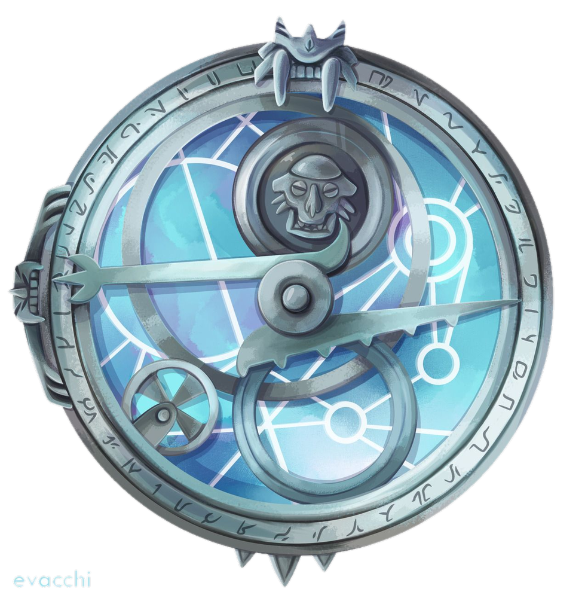

Em Arcadia, um garoto comum recebe o Amuleto da Luz do Dia e se torna o primeiro Caçador de Trolls humano. Sob a cidade, um mundo inteiro luta pela sobrevivência.
Escolha seu lado
Sua escolha muda o site inteiro.
Quem luta por Arcadia, e quem quer destruí-la.
Espaço do trailer. Role para expandir.
A cidade escondida onde vivem os trolls bons.
Trolls de Gunmar que querem dominar a superfície.
A fortaleza dos trolls, guardada pelo Caçador.
Passe o mouse (ou o dedo) para pausar o cubo.
Responda 6 perguntas e descubra se merece o Amuleto.